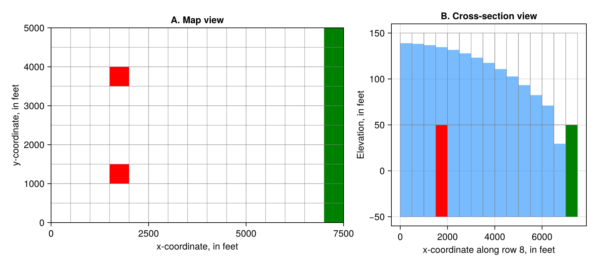
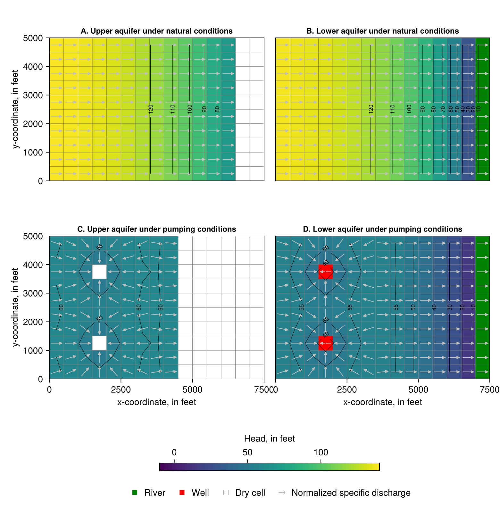
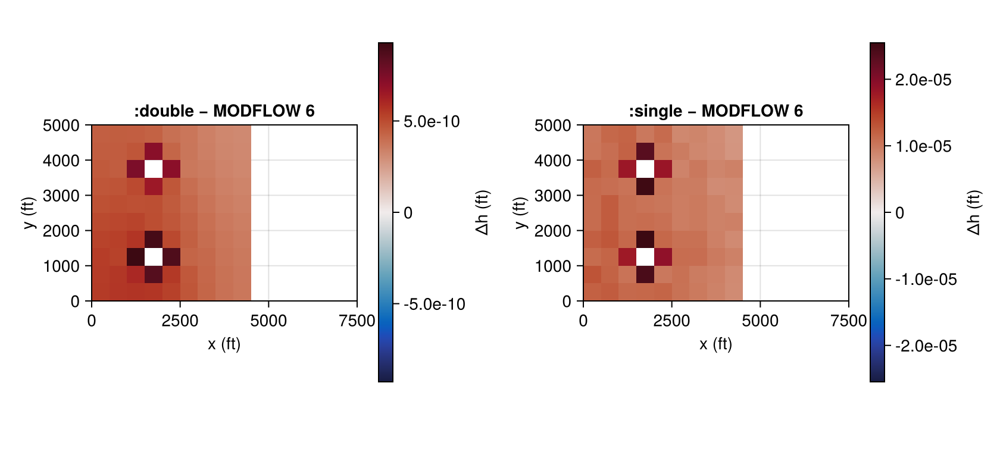
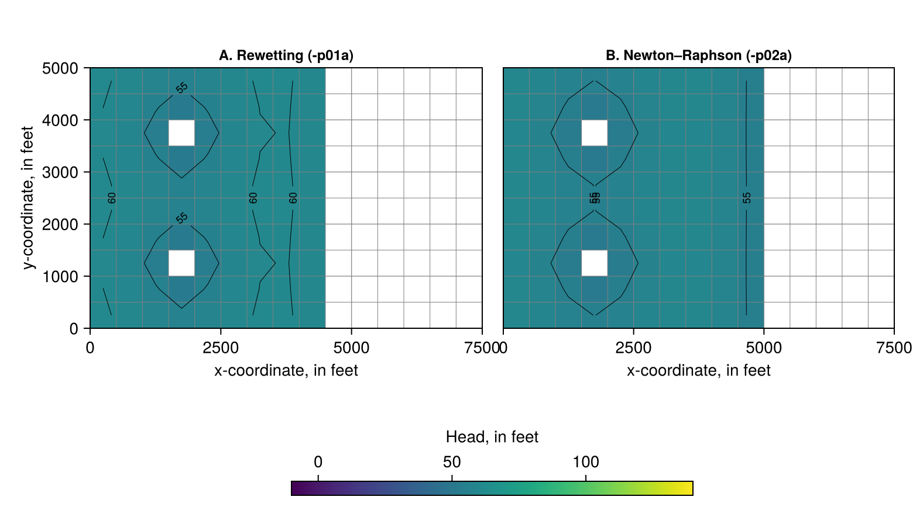

BCF2SS: wetting and drying, and Newton–Raphson
A test problem of the MODFLOW-88 and MODFLOW-2005 documentation (McDonald and Harbaugh, 1988): two aquifers of 10 × 15 cells of 500 ft, the upper one convertible, drained by a river along the east edge and recharged from above. In the first stress period the system is in its natural state; in the second, two wells pump from the lower aquifer, and part of the upper aquifer goes dry. Dry cells can become wet again (rewetting with WETDRY). Both periods are steady state. Units are feet and days.
The MODFLOW 6 example ex-gwf-bcf2ss solves it with rewetting (ex-gwf-bcf2ss-p01a) and with the Newton–Raphson formulation (-p02a). This page runs both: rewetting first, then Newton–Raphson at the end of the page.
Input and the MODFLOW 6 run
ExampleTools (docs/ExampleTools.jl in the repository) takes the input from the released mf6examples.zip, sets the tight closures of the parity tests in the IMS file, and runs MODFLOW 6.8.2. With the absolute residual criterion of the tight closures MODFLOW 6 does not converge on this model, so its run uses the relative criterion (tight-relative), as the reference run of the parity tests does.
using ModflowGPU, CairoMakie
mf6 = example_run("ex-gwf-bcf2ss-p01a"; mode = "tight-relative")
mf6.mode, mf6.mf6_time("tight-relative", 0.038374147)The ModflowGPU run
In :double and in :single precision on the CPU, with the default options.
runs = Dict(p => run_modflowgpu(mf6.dir, p) for p in (:double, :single))
r = runs[:double].result
r.convergedtrueThe model
(A) The grid with the wells (red, pumping in the second period) and the river cells (green); (B) a cross-section along row 8 with the saturated part of each cell (blue) in the first period, as in the MF6 example.
g = read_dis_grid(mf6.dir)
wells = budget_cells(g, r.budget_file, "WEL")
river = budget_cells(g, r.budget_file, "RIV")
hf = open_head_file(r.head_file)
h1 = read_head(hf, 1)
fig = Figure(; size = (900, 400))
ax = Axis(fig[1, 1]; aspect = DataAspect(), title = "A. Map view", xlabel = "x-coordinate, in feet", ylabel = "y-coordinate, in feet")
map_cells!(ax, g, wells; color = :red)
map_cells!(ax, g, river; color = :green)
map_grid!(ax, g; color = RGBf(0.5, 0.5, 0.5))
limits!(ax, extrema(g.xe)..., extrema(g.ye)...)
ax = Axis(fig[1, 2]; title = "B. Cross-section view", xlabel = "x-coordinate along row 8, in feet", ylabel = "Elevation, in feet")
row = 8
sat = Rect2f[]
for c in 1:g.ncol, l in 1:g.nlay
local t = l == 1 ? g.top[c, row] : g.botm[c, row, l - 1]
local b = g.botm[c, row, l]
local hv = h1[c, row, l]
abs(hv) < 1.0e30 && hv > b && push!(sat, Rect2f(g.xe[c], b, g.delr[c], min(hv, t) - b))
end
poly!(ax, sat; color = (:dodgerblue, 0.6))
for (cells, color) in ((wells, :red), (river, :green)), (l, rw, c) in cells
rw == row || continue
local t = l == 1 ? g.top[c, row] : g.botm[c, row, l - 1]
poly!(ax, Rect2f(g.xe[c], g.botm[c, row, l], g.delr[c], t - g.botm[c, row, l]); color)
end
section_grid!(ax, g; row, color = RGBf(0.5, 0.5, 0.5))
colsize!(fig.layout, 1, Relative(0.6))
save_figure(fig, "ex-gwf-bcf2ss-grid")
Heads
The heads in the two aquifers under natural conditions (first period) and with pumping (second period), with the contours of the MF6 example (every 10 ft from 0 to 120 ft; 10–50, 55 and 60 ft), the normalized specific discharge (computed from ModflowGPU's FLOW-JA-FACE record as MODFLOW 6 computes it for SAVE_SPECIFIC_DISCHARGE), the wells and the river. Dry cells are white.
cbc = open_budget_file(r.budget_file)
flows = read_budget(cbc; text = "FLOW-JA-FACE")
levels = (0:10:120, [10, 20, 30, 40, 50, 55, 60])
aquifer = ("Upper aquifer", "Lower aquifer")
condition = ("natural conditions", "pumping conditions")
GRAY75 = RGBf(0.75, 0.75, 0.75)
fig = Figure(; size = (780, 800))
heatmaps = []
for per in 1:2
local h = read_head(hf, per)
local qx, qy = specific_discharge(g, vec(flows[per]), h)
for l in 1:2
local ax = Axis(
fig[per, l]; aspect = DataAspect(), title = "$(('A':'D')[2(per - 1) + l]). $(aquifer[l]) under $(condition[per])",
titlesize = 12, xlabel = "x-coordinate, in feet", ylabel = "y-coordinate, in feet",
)
local hl = layer_values(h, l)
hl[hl .< g.botm[:, :, l]] .= NaN
push!(heatmaps, map_heatmap!(ax, g, hl; colorrange = (-10, 140)))
map_grid!(ax, g; color = RGBf(0.5, 0.5, 0.5))
per == 2 && map_cells!(ax, g, filter(c -> c[1] == l, wells); color = :red)
map_cells!(ax, g, filter(c -> c[1] == l, river); color = :green)
map_vectors!(ax, g, qx[:, :, l], qy[:, :, l]; color = GRAY75)
all(isnan, hl) || map_contour!(ax, g, hl; levels = levels[per], color = :black, linewidth = 0.5, labels = true, labelsize = 9)
limits!(ax, extrema(g.xe)..., extrema(g.ye)...)
l == 2 && hideydecorations!(ax; grid = false)
per == 1 && hidexdecorations!(ax; grid = false)
end
end
Colorbar(fig[3, 1:2], last(heatmaps); vertical = false, label = "Head, in feet", width = Relative(0.5))
Legend(
fig[4, 1:2],
[
MarkerElement(; marker = :rect, color = :green, markersize = 12), MarkerElement(; marker = :rect, color = :red, markersize = 12),
MarkerElement(; marker = :rect, color = :white, strokecolor = :black, strokewidth = 0.5, markersize = 12),
MarkerElement(; marker = '→', color = GRAY75, markersize = 14),
],
["River", "Well", "Dry cell", "Normalized specific discharge"]; framevisible = false, orientation = :horizontal,
)
save_figure(fig, "ex-gwf-bcf2ss-head")
Comparison with MODFLOW 6
The head differences between ModflowGPU and MODFLOW 6 in the upper aquifer at the end of the second period, in both precisions (dry cells left out).
h6 = read_head(open_head_file(only(filter(endswith(".hds"), readdir(mf6.dir; join = true)))), 2)
d = [":$p − MODFLOW 6" => mask_inactive(read_head(open_head_file(runs[p].result.head_file), 2)) .- mask_inactive(h6) for p in (:double, :single)]
save_figure(difference_map(g, d; unit = "ft", xlabel = "x (ft)", ylabel = "y (ft)"), "ex-gwf-bcf2ss-difference")
The largest head and budget differences over both periods and aquifers, next to the values of the parity table, and the wall times (CPU: this build, including compilation for the first run of the session; GPU: the parity table, AMD Radeon RX 7800 XT).
stats = Dict(p => (; cmp = compare_with_mf6(mf6.dir, runs[p]), runs[p].time) for p in (:double, :single))
comparison_table("ex-gwf-bcf2ss-p01a", stats; unit = "ft")| Preset | max |Δh| (ft), this build | max |Δh| (ft), parity table | Budget, this build | Budget, parity table | CPU time, this build (s) | GPU time, parity table (s) |
|---|---|---|---|---|---|---|
:double | 9.3e-10 | 9.3e-10 | 4.7e-13 | 4.7e-13 | 6.88 | 0.50 |
:single | 2.5e-05 | 2.5e-05 | 1.3e-07 | 1.3e-07 | 6.72 | 2.17 |
Budget: the largest difference of a budget-file flow or a listing-table rate, relative to the total inflow of its time step.
The Newton–Raphson formulation (ex-gwf-bcf2ss-p02a)
The same model with NEWTON in the model name file and no rewetting. Cells do not go dry: where the water table falls below the bottom of the upper aquifer the cell keeps a head below its bottom, has no saturated thickness and passes no water on. As for -p01a, MODFLOW 6 needs the relative residual criterion here.
mf6n = example_run("ex-gwf-bcf2ss-p02a"; mode = "tight-relative")
runsn = Dict(p => run_modflowgpu(mf6n.dir, p) for p in (:double, :single))
rn = runsn[:double].result
rn.convergedtrueThe upper aquifer under pumping conditions with both formulations: rewetting (left; dry cells white) and Newton–Raphson (right; cells with the head below the bottom white), with the contours of the MF6 example.
hn = read_head(open_head_file(rn.head_file), 2)
fig = Figure(; size = (780, 440))
hms = []
for (i, (label, h)) in enumerate((("A. Rewetting (-p01a)", read_head(hf, 2)), ("B. Newton–Raphson (-p02a)", hn)))
local ax = Axis(fig[1, i]; aspect = DataAspect(), title = label, titlesize = 12, xlabel = "x-coordinate, in feet", ylabel = i == 1 ? "y-coordinate, in feet" : "")
local hl = layer_values(h, 1)
hl[hl .< g.botm[:, :, 1]] .= NaN
push!(hms, map_heatmap!(ax, g, hl; colorrange = (-10, 140)))
map_grid!(ax, g; color = RGBf(0.5, 0.5, 0.5))
map_cells!(ax, g, filter(c -> c[1] == 1, river); color = :green)
all(isnan, hl) || map_contour!(ax, g, hl; levels = levels[2], color = :black, linewidth = 0.5, labels = true, labelsize = 9)
limits!(ax, extrema(g.xe)..., extrema(g.ye)...)
i == 2 && hideydecorations!(ax; grid = false)
end
Colorbar(fig[2, 1:2], last(hms); vertical = false, label = "Head, in feet", width = Relative(0.5))
save_figure(fig, "ex-gwf-bcf2ss-newton")
The comparison with MODFLOW 6 (cells whose MODFLOW 6 head is below the cell bottom are dry and left out: their head is not unique, see Differences from MODFLOW 6).
statsn = Dict(p => (; cmp = compare_with_mf6(mf6n.dir, runsn[p]), runsn[p].time) for p in (:double, :single))
comparison_table("ex-gwf-bcf2ss-p02a", statsn; unit = "ft")| Preset | max |Δh| (ft), this build | max |Δh| (ft), parity table | Budget, this build | Budget, parity table | CPU time, this build (s) | GPU time, parity table (s) |
|---|---|---|---|---|---|---|
:double | 7.5e-11 | 7.5e-11 | 3.3e-13 | 3.3e-13 | 0.81 | 0.17 |
:single | 1.3e-05 | 1.3e-05 | 6.5e-08 | 6.5e-08 | 3.20 | 1.58 |
Budget: the largest difference of a budget-file flow or a listing-table rate, relative to the total inflow of its time step.